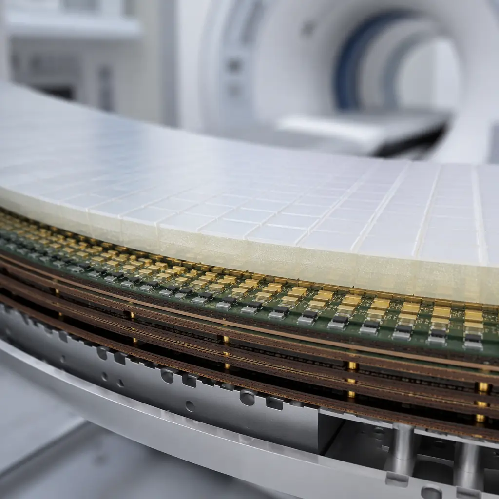
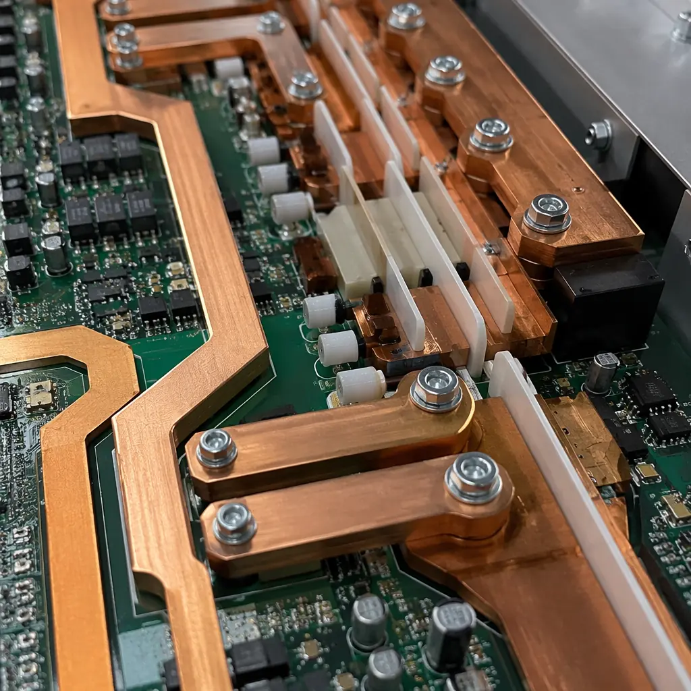

A computed tomography scanner generates 2,000-3,000 projection images per rotation, each captured by a detector array with 16 to 320 rows of scintillator elements. Behind every detector element sits an analog front-end channel on a PCB that must digitize sub-picoampere photodiode currents with 24-bit resolution at thousands of samples per second — while sitting inside a gantry rotating at 0.3 seconds per revolution under X-ray radiation. Medical imaging PCBs operate at the intersection of extreme analog precision, high-voltage isolation, radiation tolerance, and regulatory traceability that no other industry demands simultaneously.
At Huaxing PCBA, we manufacture medical-grade PCBs under ISO 13485 quality management and IPC Class 3 acceptance criteria — the standards required for life-critical medical devices. Our facility handles boards up to 32 layers with 3/3 mil trace/space, laser-drilled microvias at 0.075 mm, and full lot traceability from laminate receipt through final electrical test. This guide covers the PCB design and manufacturing requirements specific to the three most common medical imaging modalities — CT, MRI, and ultrasound — based on engineering experience supporting medical OEMs.

CT Scanner Detector PCBs: Ultra-Low-Noise Analog Design at Scale
The detector board in a modern CT scanner is an engineering marvel of miniaturization — it converts X-ray photons into electrical signals across hundreds of channels in parallel, then multiplexes and digitizes the results in real time as the gantry spins. The PCB must maintain signal fidelity at noise levels measured in femtocoulombs while surviving sustained radiation exposure and repeated mechanical stress from 0.3-second rotational cycles, 24 hours a day in hospital environments.
Analog Front-End Architecture: 64-256 Channels per Board
A typical CT detector PCB routes 64-256 photodiode channels through transimpedance amplifiers, integrators, and ADCs — all on a single board less than 200 × 50 mm. The channel-to-channel crosstalk must remain below -80 dB across all channels, which requires individual guard traces between adjacent analog inputs and dedicated ground return paths that do not share vias with neighboring channels. A single poorly-routed return path can couple enough charge from an adjacent saturated channel to create a 2-3 HU (Hounsfield Unit) artifact visible in the reconstructed image. For detailed analog-digital partitioning strategies, see our mixed-signal PCB design guide.
Material Selection for Radiation Environment
CT detector PCBs are exposed to scattered X-ray radiation throughout their service life — typically 5-10 years of continuous hospital operation. Standard FR-4 substrates can experience gradual embrittlement and dielectric property drift under cumulative radiation dose. Medical imaging OEMs increasingly specify polyimide or high-Tg FR-4 (Tg ≥ 170°C) with documented radiation tolerance testing. Polyimide substrates offer superior radiation resistance but cost 3-5× more than high-Tg FR-4. For substrate selection across different operating environments, consult our PCB materials selection guide.
Gold-Plated Detector Interface Contacts
The connection between the scintillator array and the PCB detector channels is typically made through spring-loaded contacts or conductive epoxy bonds on gold-plated pads. The gold plating must meet IPC-4552 Type II specifications — minimum 0.5 μm gold thickness over 3-5 μm nickel — to prevent oxidation and maintain consistent contact resistance across all channels for the device lifetime. Any channel with elevated contact resistance creates a gain error that appears as ring artifacts in the reconstructed image. For gold plating specifications and process control, see our PCB gold plating guide.
Engineering Reality Check: A 256-channel CT detector board with 0.4 mm pitch photodiode pads typically requires stacked microvias and at least 8-10 routing layers to fan out all channels. The via aspect ratio for laser-drilled microvias (75 μm diameter through 50 μm dielectric) is 0.67:1 — well within standard manufacturing capability, but the registration tolerance between the laser drill and the capture pad must be held to ±25 μm. Suppliers quoting ±50 μm registration will produce boards where 5-10% of microvias partially miss their capture pads — functionally invisible on electrical test but failing after 6 months of thermal cycling in the gantry.

MRI Gradient Amplifier PCBs: High-Current, High-Voltage Power Electronics
MRI gradient amplifiers generate precisely-controlled current pulses of 300-600A at voltages up to 2,000V to drive the X, Y, and Z gradient coils that spatially encode the MRI signal. These are fast-switching power electronic circuits — typical slew rates of 200 T/m/s require di/dt values that produce significant electromagnetic interference, all while the board itself sits in the fringe field of a 1.5T or 3T static magnetic field.
IGBT/SiC MOSFET Gate Driver PCB Layout
The gate driver PCB for MRI gradient amplifiers switches IGBT or SiC MOSFET modules with gate charges of 2-5 μC at frequencies from DC to 10 kHz. The gate drive loop inductance must stay below 10 nH to achieve the required switching speed without overshoot — this translates to a gate drive trace length of less than 50 mm from driver IC to power module, with the return path directly adjacent on the next layer. Every additional millimeter of gate loop adds approximately 1 nH of inductance. For high-voltage PCB design rules including creepage and clearance, see our high-voltage PCB design guide.
Heavy Copper for 600A Current Paths
The main current-carrying traces in a gradient amplifier PCB must handle 600A peak currents with acceptable I²R losses. Using standard 1 oz copper would require trace widths exceeding 200 mm — physically impossible on a standard PCB. The practical solution uses 6-12 oz copper on the power layers, often with busbar augmentation for the highest-current sections. Heavy copper PCBs require specialized etching compensation — the etch factor (ratio of lateral to vertical etch) for 6 oz copper is typically 1:1.5 to 1:2, meaning a 6 oz trace designed at 5 mm width will emerge from etching at approximately 4.2 mm. Our heavy copper PCB guide covers the design rules and manufacturing constraints for thick copper boards.
Thermal Management: 2-5 kW Dissipation per Amplifier Channel
A single gradient amplifier channel dissipates 2-5 kW during high-duty-cycle sequences like diffusion-weighted imaging. The PCB must conduct this heat away from the power semiconductors to a liquid-cooled cold plate — typically using a metal-core or aluminum-backed PCB construction. Thermal vias under each IGBT module should use 0.3 mm diameter with 0.8 mm pitch, filled and capped, with thermal resistance below 0.5°C/W from junction to cold plate interface. For comprehensive thermal management strategies, refer to our PCB thermal management guide.
Ultrasound Transducer Interface PCBs: High-Channel-Count Acoustic Arrays
Modern ultrasound transducers contain 128-256 piezoelectric elements in a phased array, each requiring an independent transmit/receive channel. The PCB inside the transducer handle — or in the system's front-end processing board — must route all these channels through transmit beamformers, T/R switches, and low-noise amplifiers in a constrained form factor. The challenge is density: 256 channels of analog processing on a board that may be only 40 × 100 mm in the transducer handle.
Flex-to-Rigid Interface for Transducer Handle PCBs
The connection from the transducer elements to the PCB typically uses a rigid-flex PCB design: a flex tail with 128-256 traces at 0.2 mm pitch bonds directly to the piezoelectric array, while the rigid section houses the transmit/receive ASICs. The flex section must survive millions of flex cycles as the transducer is manipulated during scanning. Trace pitch at 0.2 mm requires laser-direct imaging (LDI) for patterning, and the flex-to-rigid transition zone must include strain relief features to prevent trace cracking at the rigidity boundary.
Transmit Pulser: ±100V High-Voltage Isolation per Channel
Ultrasound transmit pulsers generate ±50 to ±100V pulses with rise times of 5-10 ns to excite the piezoelectric elements. Each channel must be isolated from its neighbors — parasitic capacitance between adjacent transmit traces causes element-to-element coupling that degrades beamforming accuracy. The isolation requirement between adjacent channels at 5 MHz is typically -40 dB minimum crosstalk, achieved through ground-guard traces and dedicated return paths. At 0.2 mm pitch, fitting ground guards between every signal trace leaves only 75 μm trace width — at the limit of standard PCB fabrication and requiring specialized controlled-depth routing.
Receive Path: Sub-1 nV/√Hz Noise Floor
The ultrasound receiver LNA (low-noise amplifier) must achieve noise figures below 1 nV/√Hz at the operating frequency (typically 2-15 MHz) to detect weak echoes from deep tissue. Achieving this on a production PCB requires: dedicated analog power planes with Pi-filter decoupling at each LNA, no switching power supply traces within 5 mm of the analog input section, and continuous ground planes with no splits under the signal path. A digital ground plane slot inadvertently placed under 16 of 256 channels will raise the noise floor of those channels by 3-6 dB — producing a visible stripe artifact in the B-mode image.
Regulatory Compliance: ISO 13485 & FDA Design Controls for Medical PCBs
Medical diagnostic equipment PCBs are subject to regulatory requirements that go far beyond standard IPC specifications. The key differences between industrial-grade and medical-grade PCB manufacturing come down to documentation, traceability, and process validation.
| Requirement | Industrial (IPC Class 2) | Medical (IPC Class 3 + ISO 13485) |
|---|---|---|
| Lot traceability | Date code on board | Full chain: laminate lot → drilling → plating → etching → solder mask → electrical test, with documented lot genealogy |
| Microsection | Monthly qualification coupon | Per-lot cross-section on production panel, photomicrographs archived for device lifetime |
| Cleanliness | Visual inspection | ROSE test <1.56 μg/cm² NaCl per IPC-6012, documented per lot |
| Change control | Supplier discretion | Formal PCN (Process Change Notification) 90 days before any material, process, or equipment change |
| First article | Sample inspection | AS9102-style FAIR (First Article Inspection Report) with CMM data on all critical dimensions |
| Process validation | Not required | IQ/OQ/PQ (Installation/Operational/Performance Qualification) for all critical processes |
For a detailed comparison of IPC quality standards and how they map to medical device requirements, see our IPC Class 2 vs Class 3 guide. For the full regulatory framework covering medical PCBs, read our medical device PCB manufacturing guide.
Regulatory Pitfall: Many PCB suppliers claim "ISO 13485 compliant" when they actually mean "we have read the standard." True ISO 13485 certification requires an audit by a Notified Body (e.g., BSI, TÜV SÜD) and the certificate scope must explicitly include PCB manufacturing. Before engaging a supplier for a medical imaging program, validate the certificate directly on the Notified Body's public database — do not accept a PDF from the supplier.
Selecting a PCB Supplier for Medical Imaging Programs
Medical imaging OEMs evaluating PCB suppliers should assess these five dimensions beyond the standard quality audit:
Device History Record (DHR) Infrastructure
Under FDA 21 CFR Part 820, every production lot of a medical device PCB must have a Device History Record that demonstrates the lot was manufactured in accordance with the Device Master Record. A supplier who cannot produce a DHR — or who produces one that is a photocopy of the traveler with "passed" checked on every operation — will fail an FDA inspection. Our quality system maintains full DHR documentation with process parameter recordings, inspection data, and material certificates for every production lot.
Single-Lot Integrity
Medical PCB lots smaller than a full production panel are often combined with other customers' boards on a shared panel — a practice called "batching." While cost-effective, batching breaks lot traceability and can introduce cross-contamination if another customer's board uses incompatible materials or processes. For Class 3 medical PCBs, insist on dedicated panels with single-lot integrity, even if this increases unit cost by 15-25% for low-volume builds. For low-volume PCB assembly strategies, see our low-volume PCB assembly guide.
In-House Microsection and Failure Analysis
When a CT detector board shows elevated noise on channels 47-52 after 18 months in the field, the root cause investigation requires cross-sectioning through those specific channels and SEM/EDS analysis of any anomalies found. A supplier who outsources failure analysis to a third-party lab will take 4-6 weeks to return results — during which time your field service team cannot provide answers to the hospital. In-house microsection and PCB failure analysis capability reduces this to 3-5 days.
Long-Term Process Stability for 10+ Year Product Lifecycles
Medical imaging equipment has product lifecycles of 10-15 years — far longer than consumer electronics. A PCB supplier who changes etching chemistry, laminate suppliers, or solder mask formulations without formal PCN (Process Change Notification) creates a regulatory risk. Medical OEMs should require: documented process stability over a minimum 3-year lookback period, contractual commitment to 90-day advance PCN for any process or material change, and EOL (end-of-life) buy notification for laminate or chemical discontinuation. See our component obsolescence management guide for EOL planning strategies.
IPC Class 3 Acceptance Rate on First Article
Many suppliers claim Class 3 capability but their first-article yield on a complex medical board tells a different story. A board with 12+ layers, stacked microvias, and 3/3 mil line/space should achieve >90% first-pass yield on Class 3 electrical test and >85% on microsection acceptance. Suppliers offering Class 3 at Class 2 pricing are often gambling that you won't actually perform the Class 3 microsection inspection — always audit the first production lot yourself or through a third-party inspection service. Our PCB supplier audit guide provides a structured framework for on-site quality assessment.
Starting Your Medical Imaging PCB Project
Medical diagnostic imaging PCBs operate under constraints that no other industry combines: sub-picoampere analog precision next to 600A power stages, multi-year radiation exposure, regulatory traceability from laminate lot to finished device, and product lifecycles measured in decades. The margin for error is zero — an artifact in a CT image leads to a misdiagnosis; a gradient amplifier failure during an MRI scan interrupts a procedure that may have required sedation for a pediatric patient.
At Huaxing PCBA, we manufacture medical-grade PCBs under ISO 13485 quality management with IPC Class 3 acceptance criteria. Our facility provides full lot traceability, per-lot microsection and ionic cleanliness testing, and Device History Record documentation that supports FDA 21 CFR Part 820 compliance. Read our full medical device PCB guide or contact our engineering team with your stackup and design files for a compliance-focused feasibility review.